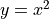

圖執行模式下的 TensorFlow 2¶
儘管 TensorFlow 2 建議以即時執行模式（Eager Execution）作爲主要執行模式，然而，圖執行模式（Graph Execution）作爲 TensorFlow 2 之前的主要執行模式，依舊對於我們理解 TensorFlow 具有重要意義。尤其是當我們需要使用 tf.function 時，對圖執行模式的理解更是不可或缺。
圖執行模式在 TensorFlow 1.X 和 2.X 版本中的 API 不同：
在 TensorFlow 1.X 中，圖執行模式主要通過「直接構建計算圖 +
tf.Session」 進行操作；在 TensorFlow 2 中，圖執行模式主要通過
tf.function進行操作。
在本章，我們將在 tf.function：圖執行模式 一節的基礎上，進一步對圖執行模式的這兩種 API 進行對比說明，以幫助已熟悉 TensorFlow 1.X 的用戶過渡到 TensorFlow 2。
提示
TensorFlow 2 依然支持 TensorFlow 1.X 的 API。爲了在 TensorFlow 2 中使用 TensorFlow 1.X 的 API ，我們可以使用 import tensorflow.compat.v1 as tf 導入 TensorFlow，並通過 tf.disable_eager_execution() 禁用默認的即時執行模式。
TensorFlow 1+1¶
TensorFlow 的圖執行模式是一個符號式的（基於計算圖的）計算框架。簡而言之，如果你需要進行一系列計算，則需要依次進行如下兩步：
建立一個「計算圖」，這個圖描述了如何將輸入數據通過一系列計算而得到輸出；
建立一個會話，並在會話中與計算圖進行交互，即向計算圖傳入計算所需的數據，並從計算圖中獲取結果。
使用計算圖進行基本運算¶
這裡以計算 1+1 作爲 Hello World 的示例。以下代碼通過 TensorFlow 1.X 的圖執行模式 API 計算 1+1：
import tensorflow.compat.v1 as tf
tf.disable_eager_execution()
# 以下三行定义了一个简单的“计算图”
a = tf.constant(1) # 定义一个常量张量（Tensor）
b = tf.constant(1)
c = a + b # 等价于 c = tf.add(a, b)，c是张量a和张量b通过 tf.add 这一操作（Operation）所形成的新张量
# 到此为止，计算图定义完毕，然而程序还没有进行任何实质计算。
# 如果此时直接输出张量 c 的值，是无法获得 c = 2 的结果的
sess = tf.Session() # 实例化一个会话（Session）
c_ = sess.run(c) # 通过会话的 run() 方法对计算图里的节点（张量）进行实际的计算
print(c_)
輸出:
2
而在 TensorFlow 2 中，我們將計算圖的建立步驟封裝在一個函數中，並使用 @tf.function 修飾符對函數進行修飾。當需要運行此計算圖時，只需調用修飾後的函數即可。由此，我們可以將以上代碼改寫如下：
import tensorflow as tf
# 以下被 @tf.function 修饰的函数定义了一个计算图
@tf.function
def graph():
a = tf.constant(1)
b = tf.constant(1)
c = a + b
return c
# 到此为止，计算图定义完毕。由于 graph() 是一个函数，在其被调用之前，程序是不会进行任何实质计算的。
# 只有调用函数，才能通过函数返回值，获得 c = 2 的结果
c_ = graph()
print(c_.numpy())
小結
在 TensorFlow 1.X 的 API 中，我們直接在主程序中建立計算圖。而在 TensorFlow 2 中，計算圖的建立需要被封裝在一個被
@tf.function修飾的函數中；在 TensorFlow 1.X 的 API 中，我們通過實例化一個
tf.Session，並使用其run方法執行計算圖的實際運算。而在 TensorFlow 2 中，我們通過直接調用被@tf.function修飾的函數來執行實際運算。
計算圖中的占位符與數據輸入¶
上面這個程序只能計算1+1，以下代碼通過 TensorFlow 1.X 的圖執行模式 API 中的 tf.placeholder() （占位符張量）和 sess.run() 的 feed_dict 參數，展示了如何使用TensorFlow計算任意兩個數的和：
import tensorflow.compat.v1 as tf
tf.disable_eager_execution()
a = tf.placeholder(dtype=tf.int32) # 定义一个占位符Tensor
b = tf.placeholder(dtype=tf.int32)
c = a + b
a_ = int(input("a = ")) # 从终端读入一个整数并放入变量a_
b_ = int(input("b = "))
sess = tf.Session()
c_ = sess.run(c, feed_dict={a: a_, b: b_}) # feed_dict参数传入为了计算c所需要的张量的值
print("a + b = %d" % c_)
運行程序:
>>> a = 2
>>> b = 3
a + b = 5
而在 TensorFlow 2 中，我們可以通過爲函數指定參數來實現與占位符張量相同的功能。爲了在計算圖運行時送入占位符數據，只需在調用被修飾後的函數時，將數據作爲參數傳入即可。由此，我們可以將以上代碼改寫如下：
import tensorflow as tf
@tf.function
def graph(a, b):
c = a + b
return c
a_ = int(input("a = "))
b_ = int(input("b = "))
c_ = graph(a_, b_)
print("a + b = %d" % c_)
小結
在 TensorFlow 1.X 的 API 中，我們使用 tf.placeholder() 在計算圖中聲明占位符張量，並通過 sess.run() 的 feed_dict 參數向計算圖中的占位符傳入實際數據。而在 TensorFlow 2 中，我們使用 tf.function 的函數參數作爲占位符張量，通過向被 @tf.function 修飾的函數傳遞參數，來爲計算圖中的占位符張量提供實際數據。
計算圖中的變量¶
變量的聲明¶
變量 （Variable）是一種特殊類型的張量，在 TensorFlow 1.X 的圖執行模式 API 中使用 tf.get_variable() 建立。與程式語言中的變量很相似。使用變量前需要先初始化，變量內存儲的值可以在計算圖的計算過程中被修改。以下示例代碼展示了如何建立一個變量，將其值初始化爲0，並逐次累加1。
import tensorflow.compat.v1 as tf
tf.disable_eager_execution()
a = tf.get_variable(name='a', shape=[])
initializer = tf.assign(a, 0.0) # tf.assign(x, y)返回一个“将张量y的值赋给变量x”的操作
plus_one_op = tf.assign(a, a + 1.0)
sess = tf.Session()
sess.run(initializer)
for i in range(5):
sess.run(plus_one_op) # 对变量a执行加一操作
print(sess.run(a)) # 输出此时变量a在当前会话的计算图中的值
輸出:
1.0
2.0
3.0
4.0
5.0
提示
爲了初始化變量，也可以在聲明變量時指定初始化器（initializer），並通過 tf.global_variables_initializer() 一次性初始化所有變量，在實際工程中更常用：
import tensorflow.compat.v1 as tf
tf.disable_eager_execution()
a = tf.get_variable(name='a', shape=[],
initializer=tf.zeros_initializer) # 指定初始化器为全0初始化
plus_one_op = tf.assign(a, a + 1.0)
sess = tf.Session()
sess.run(tf.global_variables_initializer()) # 初始化所有变量
for i in range(5):
sess.run(plus_one_op)
print(sess.run(a))
在 TensorFlow 2 中，我們通過實例化 tf.Variable 類來聲明變量。由此，我們可以將以上代碼改寫如下：
import tensorflow as tf
a = tf.Variable(0.0)
@tf.function
def plus_one_op():
a.assign(a + 1.0)
return a
for i in range(5):
plus_one_op()
print(a.numpy())
小結
在 TensorFlow 1.X 的 API 中，我們使用 tf.get_variable() 在計算圖中聲明變量節點。而在 TensorFlow 2 中，我們直接通過 tf.Variable 實例化變量對象，並在計算圖中使用這一變量對象。
變量的作用域與重用¶
在 TensorFlow 1.X 中，我們建立模型時經常需要指定變量的作用域，以及復用變量。此時，TensorFlow 1.X 的圖執行模式 API 爲我們提供了 tf.variable_scope() 及 reuse 參數來實現變量作用域和復用變量的功能。以下的例子使用了 TensorFlow 1.X 的圖執行模式 API 建立了一個三層的全連接神經網絡，其中第三層復用了第二層的變量。
import tensorflow.compat.v1 as tf
import numpy as np
tf.disable_eager_execution()
def dense(inputs, num_units):
weight = tf.get_variable(name='weight', shape=[inputs.shape[1], num_units])
bias = tf.get_variable(name='bias', shape=[num_units])
return tf.nn.relu(tf.matmul(inputs, weight) + bias)
def model(inputs):
with tf.variable_scope('dense1'): # 限定变量的作用域为 dense1
x = dense(inputs, 10) # 声明了 dense1/weight 和 dense1/bias 两个变量
with tf.variable_scope('dense2'): # 限定变量的作用域为 dense2
x = dense(x, 10) # 声明了 dense2/weight 和 dense2/bias 两个变量
with tf.variable_scope('dense2', reuse=True): # 第三层复用第二层的变量
x = dense(x, 10)
return x
inputs = tf.placeholder(shape=[10, 32], dtype=tf.float32)
outputs = model(inputs)
print(tf.global_variables()) # 输出当前计算图中的所有变量节点
sess = tf.Session()
sess.run(tf.global_variables_initializer())
outputs_ = sess.run(outputs, feed_dict={inputs: np.random.rand(10, 32)})
print(outputs_)
在上例中，計算圖的所有變量節點爲：
[<tf.Variable 'dense1/weight:0' shape=(32, 10) dtype=float32>,
<tf.Variable 'dense1/bias:0' shape=(10,) dtype=float32>,
<tf.Variable 'dense2/weight:0' shape=(10, 10) dtype=float32>,
<tf.Variable 'dense2/bias:0' shape=(10,) dtype=float32>]
可見， tf.variable_scope() 爲在其上下文中的，以 tf.get_variable 建立的變量的名稱添加了「前綴」或「作用域」，使得變量在計算圖中的層次結構更爲清晰，不同「作用域」下的同名變量各司其職，不會衝突。同時，雖然我們在上例中調用了3次 dense 函數，即調用了6次 tf.get_variable 函數，但實際建立的變量節點只有4個。這即是 tf.variable_scope() 的 reuse 參數所起到的作用。當 reuse=True 時， tf.get_variable 遇到重名變量時將會自動獲取先前建立的同名變量，而不會新建變量，從而達到了變量重用的目的。
而在 TensorFlow 2 的圖執行模式 API 中，不再鼓勵使用 tf.variable_scope() ，而應當使用 tf.keras.layers.Layer 和 tf.keras.Model 來封裝代碼和指定作用域，具體可參考 本手冊第三章。上面的例子與下面基於 tf.keras 和 tf.function 的代碼等價。
import tensorflow as tf
import numpy as np
class Dense(tf.keras.layers.Layer):
def __init__(self, num_units, **kwargs):
super().__init__(**kwargs)
self.num_units = num_units
def build(self, input_shape):
self.weight = self.add_variable(name='weight', shape=[input_shape[-1], self.num_units])
self.bias = self.add_variable(name='bias', shape=[self.num_units])
def call(self, inputs):
y_pred = tf.matmul(inputs, self.weight) + self.bias
return y_pred
class Model(tf.keras.Model):
def __init__(self):
super().__init__()
self.dense1 = Dense(num_units=10, name='dense1')
self.dense2 = Dense(num_units=10, name='dense2')
@tf.function
def call(self, inputs):
x = self.dense1(inputs)
x = self.dense2(inputs)
x = self.dense2(inputs)
return x
model = Model()
print(model(np.random.rand(10, 32)))
我們可以注意到，在 TensorFlow 2 中，變量的作用域以及復用變量的問題自然地淡化了。基於Python類的模型建立方式自然地爲變量指定了作用域，而變量的重用也可以通過簡單地多次調用同一個層來實現。
爲了詳細了解上面的代碼對變量作用域的處理方式，我們使用 get_concrete_function 導出計算圖，並輸出計算圖中的所有變量節點：
graph = model.call.get_concrete_function(np.random.rand(10, 32))
print(graph.variables)
輸出如下：
(<tf.Variable 'dense1/weight:0' shape=(32, 10) dtype=float32, numpy=...>,
<tf.Variable 'dense1/bias:0' shape=(10,) dtype=float32, numpy=...>,
<tf.Variable 'dense2/weight:0' shape=(32, 10) dtype=float32, numpy=...>,
<tf.Variable 'dense2/bias:0' shape=(10,) dtype=float32, numpy=...)
可見，TensorFlow 2 的圖執行模式在變量的作用域上與 TensorFlow 1.X 實際保持了一致。我們通過 name 參數爲每個層指定的名稱將成爲層內變量的作用域。
小結
在 TensorFlow 1.X 的 API 中，使用 tf.variable_scope() 及 reuse 參數來實現變量作用域和復用變量的功能。在 TensorFlow 2 中，使用 tf.keras.layers.Layer 和 tf.keras.Model 來封裝代碼和指定作用域，從而使變量的作用域以及復用變量的問題自然淡化。兩者的實質是一樣的。
自動求導機制與優化器¶
在本節中，我們對 TensorFlow 1.X 和 TensorFlow 2 在圖執行模式下的自動求導機制進行較深入的比較說明。
自動求導機制¶
我們首先回顧 TensorFlow 1.X 中的自動求導機制。在 TensorFlow 1.X 的圖執行模式 API 中，可以使用 tf.gradients(y, x) 計算計算圖中的張量節點 y 相對於變量 x 的導數。以下示例展示了在 TensorFlow 1.X 的圖執行模式 API 中計算  在  時的導數。
時的導數。
x = tf.get_variable('x', dtype=tf.float32, shape=[], initializer=tf.constant_initializer(3.))
y = tf.square(x) # y = x ^ 2
y_grad = tf.gradients(y, x)
以上代碼中，計算圖中的節點 y_grad 即爲 y 相對於 x 的導數。
而在 TensorFlow 2 的圖執行模式 API 中，我們使用 tf.GradientTape 這一上下文管理器封裝需要求導的計算步驟，並使用其 gradient 方法求導，代碼示例如下：
x = tf.Variable(3.)
@tf.function
def grad():
with tf.GradientTape() as tape:
y = tf.square(x)
y_grad = tape.gradient(y, x)
return y_grad
小結
在 TensorFlow 1.X 中，我們使用 tf.gradients() 求導。而在 TensorFlow 2 中，我們使用使用 tf.GradientTape 這一上下文管理器封裝需要求導的計算步驟，並使用其 gradient 方法求導。
優化器¶
由於機器學習中的求導往往伴隨著優化，所以 TensorFlow 中更常用的是優化器（Optimizer）。在 TensorFlow 1.X 的圖執行模式 API 中，我們往往使用 tf.train 中的各種優化器，將求導和調整變量值的步驟合二爲一。例如，以下代碼片段在計算圖構建過程中，使用 tf.train.GradientDescentOptimizer 這一梯度下降優化器優化損失函數 loss ：
y_pred = model(data_placeholder) # 模型構建
loss = ... # 計算模型的損失函數 loss
optimizer = tf.train.GradientDescentOptimizer(learning_rate=0.001)
train_one_step = optimizer.minimize(loss)
# 上面一步也可拆分爲
# grad = optimizer.compute_gradients(loss)
# train_one_step = optimizer.apply_gradients(grad)
以上代碼中， train_one_step 即爲一個將求導和變量值更新合二爲一的計算圖節點（操作），也就是訓練過程中的「一步」。特別需要注意的是，對於優化器的 minimize 方法而言，只需要指定待優化的損失函數張量節點 loss 即可，求導的變量可以自動從計算圖中獲得（即 tf.trainable_variables ）。在計算圖構建完成後，只需啓動會話，使用 sess.run 方法運行 train_one_step 這一計算圖節點，並通過 feed_dict 參數送入訓練數據，即可完成一步訓練。代碼片段如下：
for data in dataset:
data_dict = ... # 將訓練所需數據放入字典 data 內
sess.run(train_one_step, feed_dict=data_dict)
而在 TensorFlow 2 的 API 中，無論是圖執行模式還是即時執行模式，均先使用 tf.GradientTape 進行求導操作，然後再使用優化器的 apply_gradients 方法應用已求得的導數，進行變量值的更新。也就是說，和 TensorFlow 1.X 中優化器的 compute_gradients + apply_gradients 十分類似。同時，在 TensorFlow 2 中，無論是求導還是使用導數更新變量值，都需要顯式地指定變量。計算圖的構建代碼結構如下：
optimizer = tf.keras.optimizer.SGD(learning_rate=...)
@tf.function
def train_one_step(data):
with tf.GradientTape() as tape:
y_pred = model(data) # 模型構建
loss = ... # 計算模型的損失函數 loss
grad = tape.gradient(loss, model.variables)
optimizer.apply_gradients(grads_and_vars=zip(grads, model.variables))
在計算圖構建完成後，我們直接調用 train_one_step 函數並送入訓練數據即可：
for data in dataset:
train_one_step(data)
小結
在 TensorFlow 1.X 中，我們多使用優化器的 minimize 方法，將求導和變量值更新合二爲一。而在 TensorFlow 2 中，我們需要先使用 tf.GradientTape 進行求導操作，然後再使用優化器的 apply_gradients 方法應用已求得的導數，進行變量值的更新。而且在這兩步中，都需要顯式指定待求導和待更新的變量。
自動求導機制的計算圖對比 *¶
在本節，爲了幫助讀者更深刻地理解 TensorFlow 的自動求導機制，我們以前節的「計算 在 時的導數」爲例，展示 TensorFlow 1.X 和 TensorFlow 2 在圖執行模式下，爲這一求導過程所建立的計算圖，並進行詳細講解。
在 TensorFlow 1.X 的圖執行模式 API 中，將生成的計算圖使用 TensorBoard 進行展示：

在計算圖中，灰色的塊爲節點的命名空間（Namespace，後文簡稱「塊」），橢圓形代表操作節點（OpNode），圓形代表常量，灰色的箭頭代表數據流。爲了弄清計算圖節點 x 、 y 和 y_grad 與計算圖中節點的對應關係，我們將這些變量節點輸出，可見：
x:<tf.Variable 'x:0' shape=() dtype=float32>y:Tensor("Square:0", shape=(), dtype=float32)y_grad:[<tf.Tensor 'gradients/Square_grad/Mul_1:0' shape=() dtype=float32>]
在 TensorBoard 中，我們也可以通過點擊節點獲得節點名稱。通過比較我們可以得知，變量 x 對應計算圖最下方的x，節點 y 對應計算圖「Square」塊的「 (Square) 」，節點 y_grad 對應計算圖上方「Square_grad」的 Mul_1 節點。同時我們還可以通過點擊節點發現，「Square_grad」塊里的const節點值爲2，「gradients」塊里的 grad_ys_0 值爲1， Shape 值爲空，以及「x」塊的const節點值爲3。
接下來，我們開始具體分析這個計算圖的結構。我們可以注意到，這個計算圖的結構是比較清晰的，「x」塊負責變量的讀取和初始化，「Square」塊負責求平方 y = x ^ 2 ，而「gradients」塊則負責對「Square」塊的操作求導，即計算 y_grad = 2 * x。由此我們可以看出， tf.gradients 是一個相對比較「龐大」的操作，並非如一般的操作一樣往計算圖中添加了一個或幾個節點，而是建立了一個龐大的子圖，以應用鏈式法則求計算圖中特定節點的導數。
在 TensorFlow 2 的圖執行模式 API 中，將生成的計算圖使用 TensorBoard 進行展示：

我們可以注意到，除了求導過程沒有封裝在「gradients」塊內，以及變量的處理簡化以外，其他的區別並不大。由此，我們可以看出，在圖執行模式下， tf.GradientTape 這一上下文管理器的 gradient 方法和 TensorFlow 1.X 的 tf.gradients 是基本等價的。
小結
TensorFlow 1.X 中的 tf.gradients 和 TensorFlow 2 圖執行模式下的 tf.GradientTape 上下文管理器儘管在 API 層面的調用方法略有不同，但最終生成的計算圖是基本一致的。
基礎示例：線性回歸¶
在本節，我們爲 第一章的線性回歸示例 提供一個基於 TensorFlow 1.X 的圖執行模式 API 的版本，供有需要的讀者對比參考。
與第一章的NumPy和即時執行模式不同，TensorFlow的圖執行模式使用 符號式編程 來進行數值運算。首先，我們需要將待計算的過程抽象爲計算圖，將輸入、運算和輸出都用符號化的節點來表達。然後，我們將數據不斷地送入輸入節點，讓數據沿著計算圖進行計算和流動，最終到達我們需要的特定輸出節點。
以下代碼展示了如何基於TensorFlow的符號式編程方法完成與前節相同的任務。其中， tf.placeholder() 即可以視爲一種「符號化的輸入節點」，使用 tf.get_variable() 定義模型的參數（Variable類型的張量可以使用 tf.assign() 操作進行賦值），而 sess.run(output_node, feed_dict={input_node: data}) 可以視作將數據送入輸入節點，沿著計算圖計算併到達輸出節點並返回值的過程。
import tensorflow as tf
# 定义数据流图
learning_rate_ = tf.placeholder(dtype=tf.float32)
X_ = tf.placeholder(dtype=tf.float32, shape=[5])
y_ = tf.placeholder(dtype=tf.float32, shape=[5])
a = tf.get_variable('a', dtype=tf.float32, shape=[], initializer=tf.zeros_initializer)
b = tf.get_variable('b', dtype=tf.float32, shape=[], initializer=tf.zeros_initializer)
y_pred = a * X_ + b
loss = tf.constant(0.5) * tf.reduce_sum(tf.square(y_pred - y_))
# 反向传播，手动计算变量（模型参数）的梯度
grad_a = tf.reduce_sum((y_pred - y_) * X_)
grad_b = tf.reduce_sum(y_pred - y_)
# 梯度下降法，手动更新参数
new_a = a - learning_rate_ * grad_a
new_b = b - learning_rate_ * grad_b
update_a = tf.assign(a, new_a)
update_b = tf.assign(b, new_b)
train_op = [update_a, update_b]
# 数据流图定义到此结束
# 注意，直到目前，我们都没有进行任何实质的数据计算，仅仅是定义了一个数据图
num_epoch = 10000
learning_rate = 1e-3
with tf.Session() as sess:
# 初始化变量a和b
tf.global_variables_initializer().run()
# 循环将数据送入上面建立的数据流图中进行计算和更新变量
for e in range(num_epoch):
sess.run(train_op, feed_dict={X_: X, y_: y, learning_rate_: learning_rate})
print(sess.run([a, b]))
自動求導機制¶
在上面的兩個示例中，我們都是手工計算獲得損失函數關於各參數的偏導數。但當模型和損失函數都變得十分複雜時（尤其是深度學習模型），這種手動求導的工程量就難以接受了。因此，在圖執行模式中，TensorFlow同樣提供了 自動求導機制 。類似於即時執行模式下的 tape.grad(ys, xs) ，可以利用TensorFlow的求導操作 tf.gradients(ys, xs) 求出損失函數 loss 關於 a ， b 的偏導數。由此，我們可以將上節中的兩行手工計算導數的代碼
# 反向传播，手动计算变量（模型参数）的梯度
grad_a = tf.reduce_sum((y_pred - y_) * X_)
grad_b = tf.reduce_sum(y_pred - y_)
替換爲
grad_a, grad_b = tf.gradients(loss, [a, b])
計算結果將不會改變。
優化器¶
TensorFlow在圖執行模式下也附帶有多種 優化器 （optimizer），可以將求導和梯度更新一併完成。我們可以將上節的代碼
# 反向传播，手动计算变量（模型参数）的梯度
grad_a = tf.reduce_sum((y_pred - y_) * X_)
grad_b = tf.reduce_sum(y_pred - y_)
# 梯度下降法，手动更新参数
new_a = a - learning_rate_ * grad_a
new_b = b - learning_rate_ * grad_b
update_a = tf.assign(a, new_a)
update_b = tf.assign(b, new_b)
train_op = [update_a, update_b]
整體替換爲
optimizer = tf.train.GradientDescentOptimizer(learning_rate=learning_rate_)
grad = optimizer.compute_gradients(loss)
train_op = optimizer.apply_gradients(grad)
這裡，我們先實例化了一個TensorFlow中的梯度下降優化器 tf.train.GradientDescentOptimizer() 並設置學習率。然後利用其 compute_gradients(loss) 方法求出 loss 對所有變量（參數）的梯度。最後通過 apply_gradients(grad) 方法，根據前面算出的梯度來梯度下降更新變量（參數）。
以上三行代碼等價於下面一行代碼：
train_op = tf.train.GradientDescentOptimizer(learning_rate=learning_rate_).minimize(loss)
使用自動求導機制和優化器簡化後的代碼如下：
import tensorflow as tf
learning_rate_ = tf.placeholder(dtype=tf.float32)
X_ = tf.placeholder(dtype=tf.float32, shape=[5])
y_ = tf.placeholder(dtype=tf.float32, shape=[5])
a = tf.get_variable('a', dtype=tf.float32, shape=[], initializer=tf.zeros_initializer)
b = tf.get_variable('b', dtype=tf.float32, shape=[], initializer=tf.zeros_initializer)
y_pred = a * X_ + b
loss = tf.constant(0.5) * tf.reduce_sum(tf.square(y_pred - y_))
# 反向传播，利用TensorFlow的梯度下降优化器自动计算并更新变量（模型参数）的梯度
train_op = tf.train.GradientDescentOptimizer(learning_rate=learning_rate_).minimize(loss)
num_epoch = 10000
learning_rate = 1e-3
with tf.Session() as sess:
tf.global_variables_initializer().run()
for e in range(num_epoch):
sess.run(train_op, feed_dict={X_: X, y_: y, learning_rate_: learning_rate})
print(sess.run([a, b]))